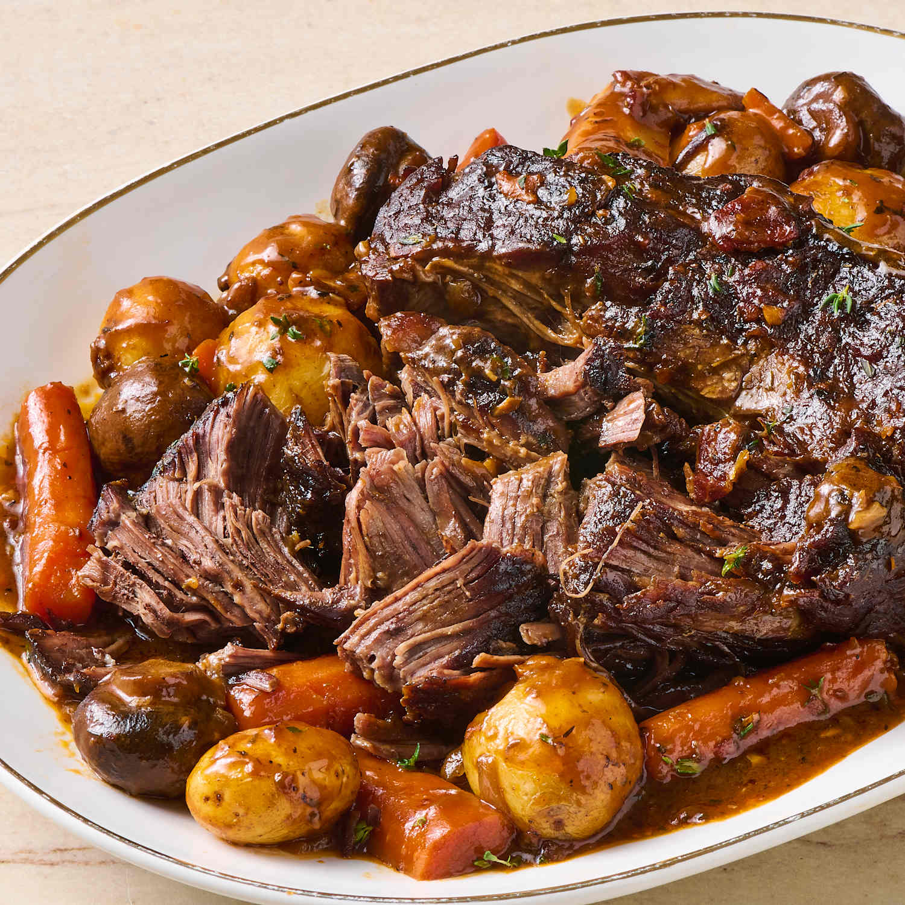

Pot Roast

A classic family favorite!
This rich and indulgent beef preperation
is sure to please everyone at your table.
And this recipe is large enough to feed them
all too.
Start a new tradition with this dish tonight!
Ingredients
- 3 1/2 to 4 pound beef chuck roast
- 2 tablespoons olive oil
- 1 peeled julienne yellow onion
- 2 thinly sliced and rinsed leeks, white and yellow parts only
- 6 thinly sliced garlic cloves
- 1 cup red wine
- 3 tablespoons tomato paste
- 6 cups beef stock
- 2 bay leaves
- 8 to 10 sprigs fresh thyme
- 8 to 10 fresh parsley stems with leaves
- 2 pounds baby Yukon potatoes
- 6 peeled regular or 10 baby tri-color carrots cut into 2 inch pieces
- 4 ribs of celery cut into 2 inch pieces
- 2 peeled parsnips but into 2 inch pieces
- 1 peeled rutabaga cut into 1 inch cubes
- 1/2 buerre manie recipe
- Worcestershire sauce to taste
- 1 tablespoon red wine vinegar
- coarse salt and fresh cracked black pepper to taste
- optional finely minced parsely for garnish
Steps
- Generously season the beef on all sides with salt.
- Place on a rack over a sheet tray and place uncoved in the refrigerator for 12 to 48 hours.
- Remove the beef from the fridge and season with pepper on all sides.
- Add the olive oil ot a large Dutch oven pot over high heat until it smokes lightly.
- Place in the beeg, turn the heat down to medium, and sear on all sides until it is golden brown all around. This will take 3 to 4 minutes per side.
- Set the beef aside on a plate and add the oninos and leeks, season with salt, and saute for 4 to 6 minutes. Then, turn the heat down to low medium and contine cooking for 10 minutes or until the onions are well browned.
- Stir in the garlic and cook until fragrant, which takes 30 to 45 seconds.
- Next, stir in the tomato paste and cook for 2 to 3 minutes or until it is incorporated into the vegetables.
- Pour in the 3/4 cup of wine, beef stock, bay leaves, thyme, parsely, salt, and pepper and stir to taste.
- Add back in the seared beeg and bring the mixture to a boil. Put the lid on the pot, place it on the rack in the lower third of the oven, and cook at 325 degrees for 3 1/2 to 4 hours or until fork tender and has an internal temperature of 200 to 210 degrees.
- With about 70 minutes left in the cooking process, add the potatoes, prepared carrots, celery, and any other vegetables to the pot along with the beef and finish cooking alongside the pot roast.
- Remove the pot from the oven and carefully set aside only the beef roast. Mix softened butter and flour to make the beurre manie.
- Add the beurre manie to the pot with the liquid and vegetables and cook over low to medium heat for 3 to 5 minutes or until the sauce thickens like a gravy.
- Finish the mixture by stirring in optional vinegar and Worcestershire sauce.
- Add the beef back to the pot and serve.
Bon appetit!
Home